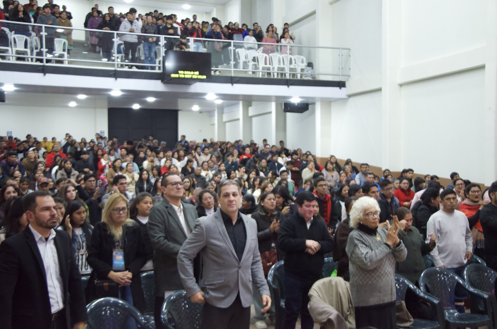
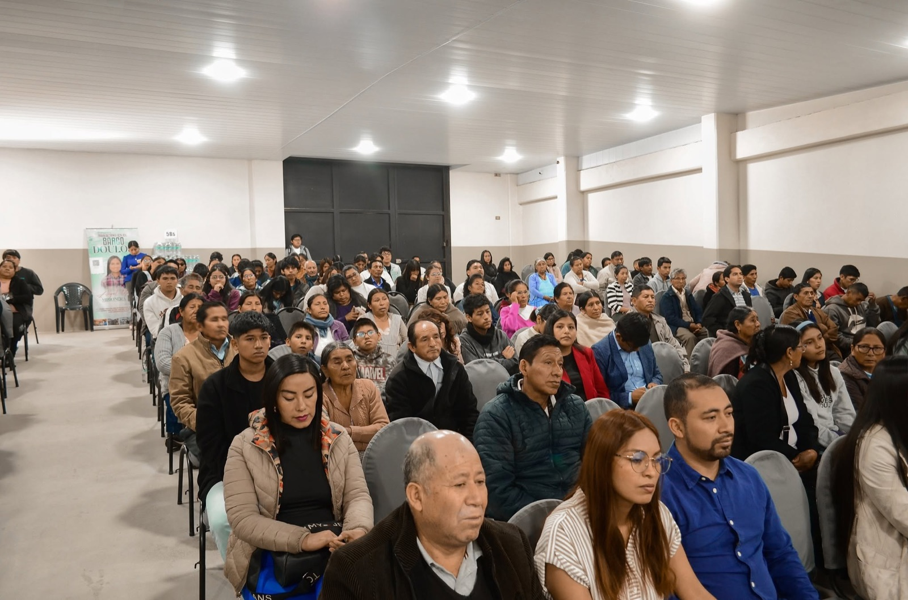

UNA FAMILIA
PARA QUE TODOS PUEDAN
¡Eres bienvenido aquí!
Ministerio Internacional Primera Asamblea es una iglesia en Sucre con el deseo de ayudarte a llegar a ser la persona que Dios creó. Sin importar tu historia, estás invitado a ser parte de lo que Dios está haciendo entre nosotros. Aquí encontrarás una familia a la cual pertenecer mientras descubres quién es Dios y la vida plena que Él tiene para ti. ¡Bienvenido a casa!
Conoce nuestra historia
PARA TODA LA FAMILIA
MIPAM KIDS
4 a 12 añosNuestra red de niños existe para que los más pequeños conozcan a Jesús como su Señor y Salvador, con adoración, Palabra adaptada y juegos, cada semana.
Sábado · 14:00 Conoce más
KINGS ARMY
Pre-juveniles · 13 a 17 añosCreemos que cada pre-adolescente debe crecer en una relación auténtica con Jesús, descubriendo su identidad y sus primeros pasos de un caminar propio con Dios.
Sábado · 16:00 Conoce másJÓVENES
18 años en adelanteUn espacio de alabanza, enseñanza y comunidad para que los jóvenes vivan su fe con propósito y sirvan a quienes los rodean.
Sábado · 18:00 Conoce másSIRVE EN UN MINISTERIO
Dios nos creó con dones para bendecir a otros. Si quieres poner los tuyos al servicio de la iglesia y de tu ciudad, hay un lugar para ti en nuestro equipo. Cuéntanos en qué te gustaría servir y un líder se pondrá en contacto contigo.
Quiero servir- Alabanza y adoración
- Niños · MIPAM Kids
- Pre-juveniles · Kings Army
- Jóvenes
- Intercesión
- Recepción y bienvenida
- Sonido, video y medios
- Escuela de Líderes